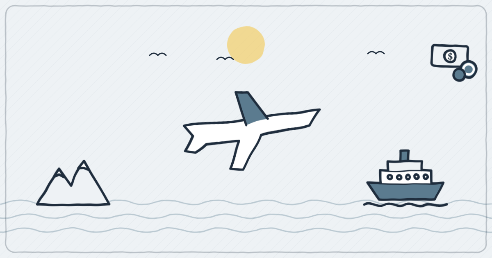

Alaska Cruise From Calgary: What the Whole Trip Costs
A Calgary couple should budget about C$4,200–8,700 all-in for a 7-night Alaska cruise in an inside cabin, or C$5,700–11,200 with a balcony, at recent prices. Starting in Calgary rather than Vancouver adds roughly C$700–1,500 for flights or fuel, a hotel night and parking, before the fare itself.

Budget about C$4,200–8,700 for two in an inside cabin on a 7-night Alaska cruise from Calgary, or C$5,700–11,200 with a balcony, at recent prices. The Calgary part of that, flights or fuel, a hotel night and parking at both ends, is roughly C$700–1,500 on top of what a Vancouver couple pays for the same ship. Everything else, from the fare to the whale-watching tour, costs the same wherever you live.
What does an Alaska cruise cost before you leave Calgary?
Start with the ship. The fare, taxes, gratuities, drinks and excursions for a 7-night round trip out of Canada Place are worked through line by line in what an Alaska cruise from Vancouver really costs: roughly C$3,500–7,200 for two inside, C$5,000–9,700 with a balcony, including a few dollars of SkyTrain. Calgary adds a travel layer on top.
| Calgary add-on, per couple | At recent prices | Notes |
|---|---|---|
| Return flights YYC to YVR | C$300–800 | Averages run under C$200 a person on the route, but summer sailing dates sit at the top |
| Hotel in Vancouver the night before | C$250–450 | Downtown in cruise season; cheaper near a Canada Line station in Richmond |
| Getting to and from YYC | C$120–200 | Nine days in the Economy lot, or a taxi each way |
| Canada Line, airport to Waterfront | C$40–50 | Includes the airport add-fare on the way in |
| Calgary layer | C$700–1,500 | Add to the Vancouver total |
That layer is where the C$4,200–8,700 and C$5,700–11,200 ranges come from. May, a seat sale and the Economy lot put you near the bottom; a July balcony, full-fare flights and a harbourfront hotel put you at the top.
Quick math: two seat-sale flights at C$160 each, a C$280 hotel, C$118 of YYC Economy parking and C$46 of Canada Line comes to C$764. The same trip on C$400 summer flights and a C$420 hotel is C$1,384.
How much do flights from Calgary to Vancouver cost in cruise season?
WestJet and Air Canada each run more than 70 flights a week between the two cities, Flair adds about 20, and the hop takes around an hour and a half. Over a recent twelve months, Kayak put the average return at about C$194, with January cheapest and December dearest.
Cruise season is not January. Expect C$150–400 a person return for May to September travel, more inside the last few weeks or on a long weekend. Price the discount carriers with bags included: a cruise couple with two checked cases can find the cheap fare costs more than the full-service one.
Fly the day before sailing, not the morning of; a delayed 7 am departure is the most common way Calgarians miss a ship. The booking order for a summer sailing is in when to book flights for an Alaska cruise.
Tip: you gain an hour flying west, so an afternoon flight still gets you downtown for dinner and saves a day of parking at YYC.
Is it cheaper to drive from Calgary to the cruise ship?
Calgary to Canada Place is about 970 kilometres: the Trans-Canada through Banff, Golden and Revelstoke to Kamloops, then the Coquihalla to Hope and into the city. Ten to eleven hours in good weather. Flyers and drivers both arrive the day before sailing, so the Vancouver hotel night cancels out. The rest differs.
| Per couple, 7-night cruise | Fly | Drive |
|---|---|---|
| Transport | C$300–800 flights | C$240–360 fuel, both ways |
| Parking | C$120–200 at YYC or taxis | C$185–280 pre-booked under Canada Place |
| Extra nights | None | Often one more on the road, C$150–250 |
| Canada Line | C$40–50 | None |
| Time | Half a day each way | A full day each way |
| Rough total | C$460–1,050 | C$425–890 |
The cash difference is small. Driving pulls ahead with three or four of you in one vehicle, because fuel and parking do not grow with headcount and flights do, and when you want the drive itself: a night in Kelowna, the Rockies on the way home. Count a Parks Canada pass if you stop inside Banff, Yoho or Glacier, and check the Coquihalla forecast in May and September, when the summit can still see snow.
Book the terminal parking when you book the cruise: the garage under Canada Place fills on peak Saturdays and walk-up rates are higher. Shuttle lots and Richmond park-and-cruise hotels are the cheaper alternatives.
Watch out: if you fly, the car still has to live somewhere for nine days. The posted rates and the walk-versus-parkade question are in Calgary airport parking for a cruise; the Economy lot is about half the price of the long-term parkade.
Would Seattle be cheaper for someone starting in Calgary?
Seattle sailings sometimes advertise a lower fare for the same week. Run the whole trip before switching: the flight from YYC to Seattle costs more than the hop to Vancouver, Pier 91 is a cab ride from downtown rather than a walk from the SkyTrain, every receipt from the taxi onward is in US dollars, and the ship spends an evening in Victoria to satisfy US cabotage rules rather than a day in Alaska. Driving there is a longer day with a border queue at the end. Once everything is in Canadian dollars, Vancouver nearly always wins for a Calgary couple; the Seattle fare earns a look only when it is several hundred dollars lower per person.
When should Calgarians sail to keep the price down?
The fare moves with the calendar more than anything else. Late June to mid-August, when Alberta schools are out, is peak, and the cabin and the flight both cost more at once. Families cannot choose the shoulder weeks; couples can.
- May. Lowest fares, long days, snow on the peaks, cooler on deck.
- Late June to mid-August. Warmest weather, highest fares, busiest ports.
- September. Fares drop again, the Coquihalla is still clear for drivers, rain more likely in Southeast Alaska.
For Canadians: every port on this cruise is in the United States, so Alberta Health Care pays a fraction of any hospital bill. Travel medical insurance belongs in the budget on the day you pay the deposit; what cruise insurance costs for Canadians has the ranges.
Does a one-way cruise to Whittier or Seward cost more from Calgary?
Yes, usually by the price of the flight home. Northbound Gulf of Alaska sailings end in Whittier or Seward, two to three hours from Anchorage airport, and there is no cheap, frequent route from Anchorage to Calgary: most routings connect through Seattle or Vancouver, and summer seats are shared with land tourists. Book that leg early and compare an open-jaw ticket on one airline against two one-ways. The line's coach to the airport, or a night in Anchorage when times do not line up, is billed in US dollars. The reward is the scenery north of Juneau that round trips never reach; for a first Alaska cruise, the Vancouver round trip is the simpler, cheaper week.
Where can a Calgary couple save C$1,000?
- Sail in May or September instead of July. That one change can be worth C$600–1,200 on a balcony for two.
- Book the ship first and the flights when a sale lands, two to six months out. The route is competitive, and the difference between a sale fare and a last-minute one is C$150–250 a person.
- Park in the Economy lot at YYC, or share a ride with friends who are also sailing. About C$110 saved against the long-term parkade.
- Prepay gratuities in Canadian dollars at booking where the line offers it, so the exchange rate stops moving on that part of the bill.
- Pick one excursion each that you would be sorry to miss and walk the other ports. Ketchikan and Skagway are good on foot.
Want this checked for your own sailing? A licensed cruise consultant can price it up and answer questions for free, with no obligation.
Ask a cruise expert →The Calgary budget in three lines
Take the Vancouver total for your cabin type, add C$700–1,500 for the Calgary layer, and decide between flying and driving on headcount rather than price. Two people fly; four people drive. Then put the money where Alaska rewards it: the cabin side and the glacier day, not the airport.
Questions people also ask
How much more does an Alaska cruise cost from Calgary than from Vancouver?
Roughly C$700–1,500 for a couple at recent prices. That covers return flights or fuel, a hotel in Vancouver the night before, parking at YYC or at Canada Place, and the airport train. The cruise fare, taxes, gratuities and excursions are the same whichever city you start in.
Is it cheaper to drive from Calgary to Vancouver for a cruise?
For two people it is close to a draw once you add fuel both ways, terminal parking and an extra night on the road, and it costs you two more days. Driving starts to win for three or four travellers in one car, or when you want to stop in the Okanagan or the Rockies on the way.
Should Calgarians sail to Alaska from Seattle instead of Vancouver?
Usually not. The Seattle fare is sometimes lower, but the flight from Calgary costs more, every cost from the taxi onward is in US dollars, and you need a passport either way. Price it as a check, then add the exchange rate before deciding.